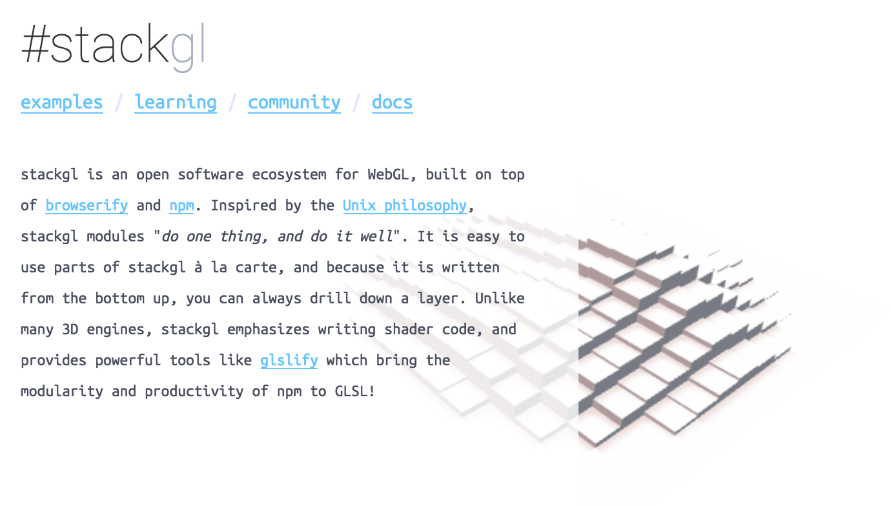

two schools of 3d graphics
canned 3d engine
- easy set up
- less flexibility
- difficult maintanenace
do-it-yourself
- more control
- less superfluous junk
- duplication of effort
democratizing computer graphics
"simple made easy"
want:
- shaders!
- accessible geometry > baked assets
- reusable components
- explicit > implicit
- open ecosystem
make it easy for anyone to build exactly the 3d engine they need without compromising on quality or robustness
stack.gl
goal: modularize computer graphics

lessons from stack.gl
glslify and simplicial complexes: üòÄ üëç
webgl wrappers: üòû
- too much shared state
- too much coupling between modules
- lack of testing and clear specifications
regl
design goals:
- reactivity: minimize shared state
- reliability: docs, specs and tests
- responsiveness: minimal overhead
object oriented rendering
- scene graphs
- extremely common
- "dual write"/data binding problem
- ex: the DOM, most 3d engines
functional rendering
- unidirectional data flow
- no state => no data binding
- ex: react/redux, elm
reliability
built for projects with long life cycles
- immediate and clear error messages
- well specified APIs
- commitment to API stability and limited scope
- over 40,000 test cases, >95% coverage
- continuous integration and code review
headless-gl
npm install gl
- creates a webgl context in node.js without a window
- works in most CI environments: circle-ci, travis, etc.
- fully conforms to official Khronos ARB test suite
- built on top of angle
get involved!
- regl.party
- https://github.com/regl-project/regl
- https://gitter.im/mikolalysenko/regl
acknowledgements
- @freeman-lab: financial and moral support
- @erkaman: development
- @whichlight: event planning and coordination
- @realazthat, @substack, @mk30 and many others: feedback, discussion and testing